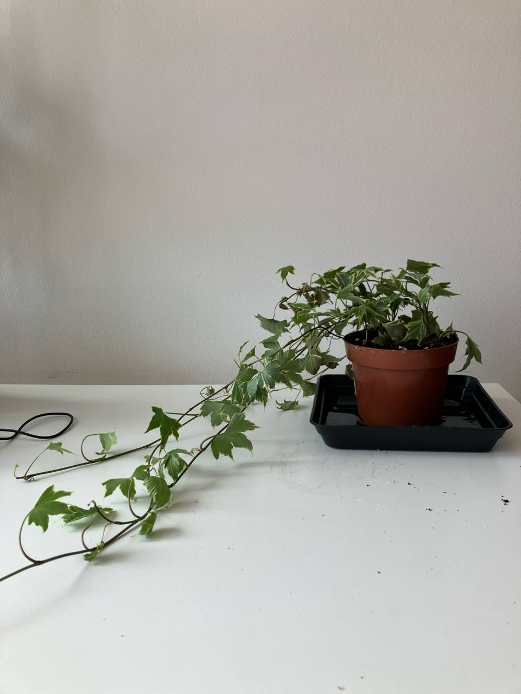

Activity
- Scheduled
- Feeding 01-09-2024
- Repotting 03-09-2025
Hedera Variegata Plant Care Guide
Environment
Light
- Bright Indirect Light: Hedera Variegata prefers bright, indirect light but can tolerate low light conditions. Avoid direct sunlight as it can scorch the leaves.
Soil
- Well-Draining Soil: Use a potting mix that drains well. A mixture of regular potting soil and perlite or sand works well for Hedera Variegata.
Temperature
- Cool to Moderate Temperatures: This plant prefers temperatures between 50-75°F (10-24°C). It can tolerate occasional dips in temperature but should be protected from frost.
Routine jobs
Watering
- Watering Schedule: Water the plant when the top inch of soil feels dry to the touch. Overwatering can lead to root rot, so ensure proper drainage.
- Humidity: Hedera Variegata enjoys moderate humidity. In dry environments, consider misting the plant occasionally or using a humidifier.
Feeding
- Fertilization: Feed Hedera Variegata monthly during the growing season (spring and summer) with a balanced liquid fertilizer diluted to half strength. Reduce feeding in the fall and winter.
Potting
- Container Choice: Choose a pot with drainage holes to prevent waterlogging. Hedera Variegata can grow in hanging baskets, containers, or as ground cover.
- Repotting: Repot every 1-2 years or when the plant outgrows its container. Use fresh potting mix during repotting.
Pruning
- Pruning: Prune the plant to control its size and shape. Regular pruning encourages bushier growth and prevents the plant from becoming leggy.
Troubleshooting
- Common Pests: Watch for pests such as spider mites, aphids, and mealybugs. Treat infestations with insecticidal soap or neem oil.
- Leaf Care: Remove any yellow or damaged leaves to keep the plant healthy and prevent disease.